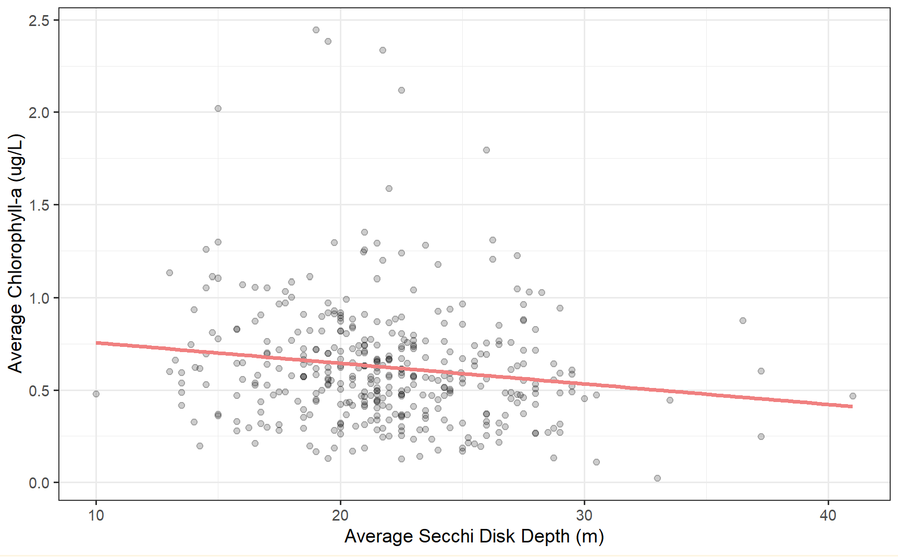
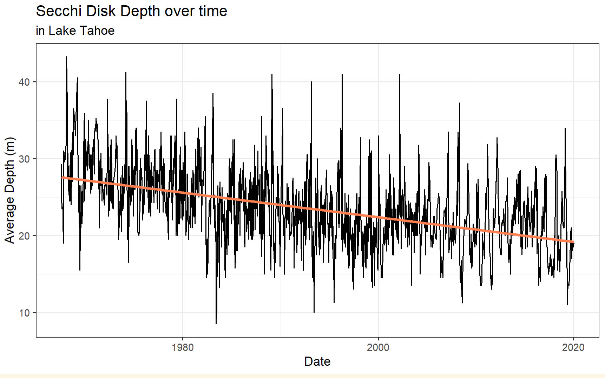
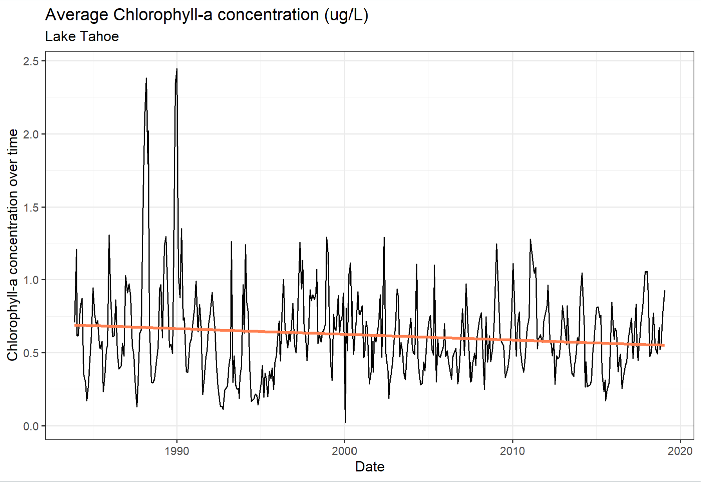

Background
Lake Tahoe water clarity has been measured since 1967.
Clarity is measured as depth using a Secchi disk.
California and Nevada, are actively working to restore lake clarity to its historic 97.4 feet.
Factors known to influence year-to-year changes in clarity include the magnitude of runoff, the warming of the lake surface and the depth to which the lake mixes in the previous winter.
Analysis
Simple Linear Regression model
Call: lm(formula = Secchi_Ave ~ avg_Chla, data = joined)
Residuals: Min 1Q Median 3Q Max
-12.144 -2.554 -0.314 2.535 18.834
Coefficients: Estimate Std. Error t value Pr(>|t|) (Intercept) 23.0601 0.4660 49.487 < 0.0000000000000002 ***
avg_Chla -1.9169 0.6615 -2.898 0.00397 **
--- Signif. codes: 0 ‘***’ 0.001 ‘**’ 0.01 ‘*’ 0.05 ‘.’ 0.1 ‘ ’ 1 Residual standard error: 4.258 on 385 degrees of freedom Multiple R-squared: 0.02135, Adjusted R-squared: 0.01881 F-statistic: 8.398 on 1 and 385 DF, p-value: 0.003971
Time Series Analysis
seasonality
overall decline in in secchi depth


Takeaways
Chlorophyll only shows a small influence on the variance of clarity
look at things that interact with chl
- diatoms/zooplankton
References
Toy, A. N. (2023, April 10). Clarity/Secchi. Tahoe Environmental Research Center. https://tahoe.ucdavis.edu/secchi#:~:text=Clarity%20sinks%20in&text=In%202022%2C%20Lake%20Tahoe’s%20average,Secchi%20depth%20was%2080.6%20feet.
Watanabe, Shohei; Schladow, Geoffrey (2022). Limnological data for Lake Tahoe seasonal and long-term clarity trend analysis report [Dataset]. Dryad. https://doi.org/10.25338/B83P8B
Citation
@online{holt2023,
author = {Holt, Olivia},
title = {Olivia {Holt}},
date = {2023-12-12},
url = {https://olleholt.github.io/blog/2023-12-12-eds222-final},
langid = {en}
}